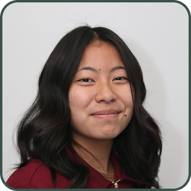

About Me
I am a high school junior with an interest and curiosity in designing and building responsive websites in web development. I am proficient in HTML & CSS and have experience in graphic designing, 3D modeling, and programming.

Experience in CART
This year at CART has been one of the biggest periods of growth and skill development for me; academically and personally. At the beginning of the year, I had little to no experience with what I was about to expect. I was still building confidence in my coding skills, especially with HTML, CSS, and Javascript. At times, I felt more comfortable on focusing designs such as wireframes and figma prototypes, rather than the actual coding.
As the school semester progressed, I began pushing myself outside of that comfort zone. Through projects like my to-do app and budget calculator projects, I became more confident in problem solving and debugging. I learned how to work through coding issues instead of stopping and giving up when something didn't make sense to me for the first time.
One of the biggest watts I grew was having persistence. There were many times where bugs, layout issues, or Javascript errors slowed down my progress, but instead of becoming discouraged, I tried to continue revising and researching until I understood what went wrong and what is supposed to be correct.
This year has helped me grow as a collaborator– even if you haven't fully realized it yet. Working with classmates and clients taught me the importance of communication, team, and flexibility. Overall, CART has given me a lot of help to shape me into a stronger, confident, and professional student.
Awards and Achievements
Some achievements this year include successfully completing multiple collaborative and independent web development projects, contributing to client-based work, and participating in showcase presentations. One achievement I am extremely proud of was contributing to the Zoologix project, where the team I was selected to work with were great people–and helped us get placed third in our CART showcase. This experience reflected both teamwork and the ability to create professional-level work under deadlines.
Certifications
Through my classes and projects, I have developed experience in:
- HTML
- CSS
- JavaScript
- Figma
- Adobe
- UX/UI design principles
- Accessibility and user-centered design
These experiences would continue to build my preparation for future education and career opportunities.
My 5-Year Plan
For a while I have been interested in graphic design and marketing. Therefore, I hope to build a successful path in both graphic design and marketing, combining creativity with strategy to create visuals and campaigns that connect other people. My goal is to work in a career where I can design branding, advertisements, social media content, and digital experiences that help businesses or communities grow effectively.
In the first year of working my way for this, my main focus is to continue developing my skills through school projects and personal work. For the next year I would attend a graphic design class for CART, meaning I could improve my skills there. I want to strengthen my experience with tools such as Adobe, Canva, and Figma while learning and understanding the important design principles. During this time, I would also like to update my portfolio with projects to show my progress over time.
For my second year, after graduating high school, I plan to begin college and enter a field relating to graphic design, digital media, or marketing. During this time, I want to learn more about consumer behavior, advertising strategies, branding, and digital marketing while continuing to improve my skills.
For the third year, I’d hope to gain real-world world experience through an internship, volunteer work, or freelance opportunities. My goal is to work with a company, small business, or organizations where I can help design and develop branding assets. This experience would help me understand how design and marketing work together in professional settings.
For the fourth year, I’d like to continue building a strong portfolio that showcases both my activity and my ability to market products or services effectively. I hope to take on larger projects such as campaign branding, website design, or digital advertisement work that demonstrates growth in the graphic design and marketing fields.
By the fifth year, my goal is to either be graduating with a degree or already beginning my career in graphic designing or marketing. I hope to be working in a professional environment where I can combine design and strategic thinking into creative work.
You’ve reached the bottom! This is all I have for now-If you have any questions feel free to ask me!
 nylia.vang1@gmail.com
nylia.vang1@gmail.com

 nyyvng
nyyvng
You’ve reached the bottom! This is all I have for now-If you have any questions feel free to ask me!
nylia.vang1@gmail.com